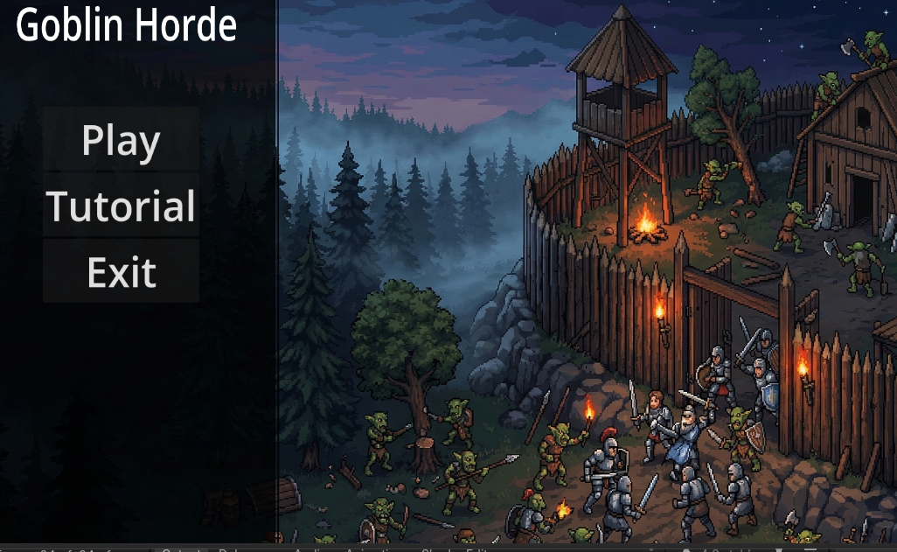
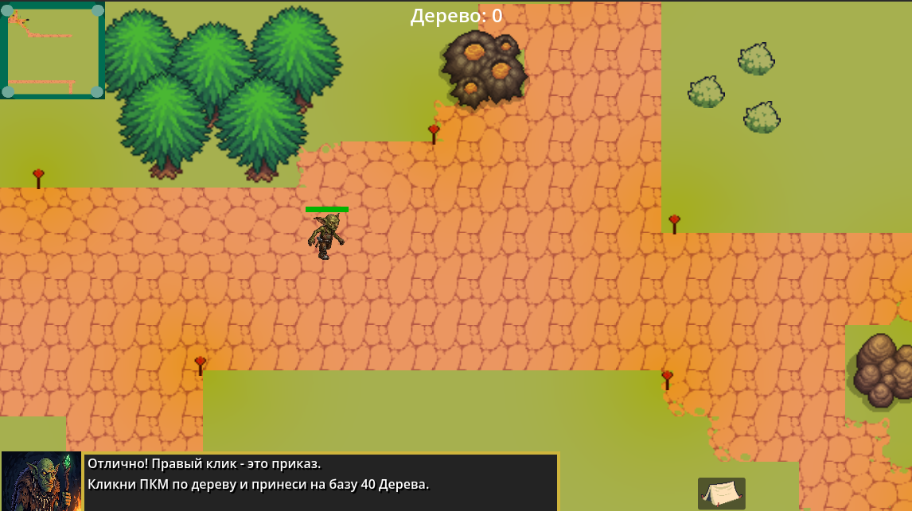
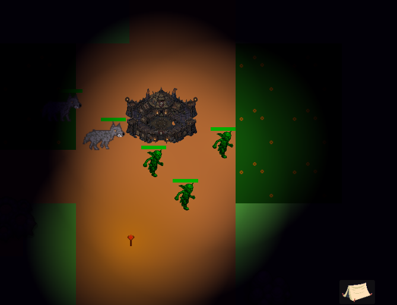
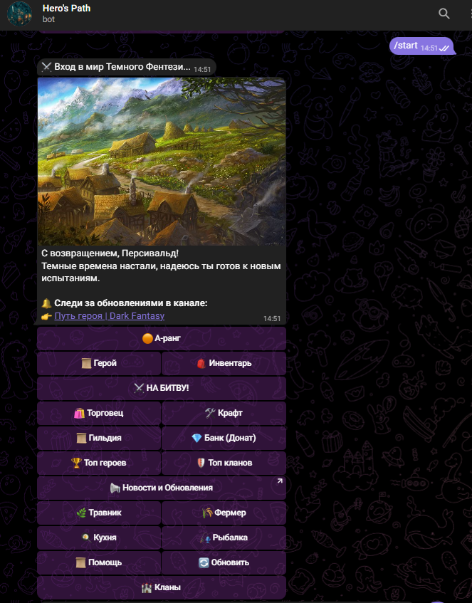
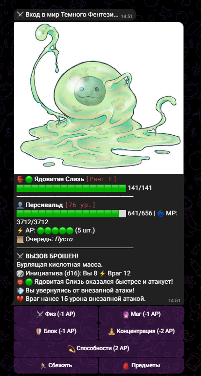
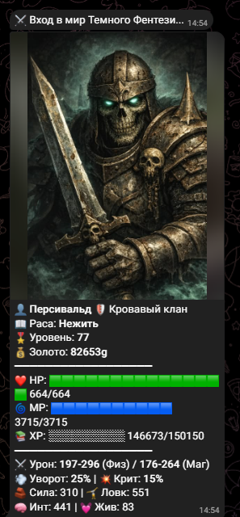

Проекты в разработке
RTS про гоблинов (Godot Engine)
Жанр: Стратегия в реальном времени (RTS) в сеттинге темного фэнтези.
О чем игра:
Основная цель игры — помочь племени гоблинов выжить в жестоком и несправедливом мире. На ваши земли постоянно нападают жуткие монстры, а классические «светлые» герои и другие фэнтезийные расы, такие как эльфы, раз за разом пытаются истребить ваш народ.
Игроку предстоит взять на себя роль достойного вождя. Ваша задача — объединить разрозненных гоблинов, наладить добычу ресурсов, отстроить неприступный лагерь и создать армию, которая заставит весь мир считаться с вашим братом!
Процесс разработки:
Игра активно разрабатывается на движке Godot. В данный момент я плотно работаю над визуальной частью: рисую спрайты для гоблинских построек и различных типов юнитов, а также прописываю логику поведения искусственного интеллекта и механики строительства базы.



Dark Fantasy RPG (Telegram Bot)
Жанр: Текстовая ролевая игра (RPG) в сеттинге темного фэнтези.
Стек технологий: Python (python-telegram-bot), PostgreSQL / SQLite.
О чем игра:
Полноценная, глубокая ролевая игра, работающая прямо в мессенджере. Мир погрузился во тьму, и игроку предстоит выбрать свой путь, чтобы выжить. Это не просто «кликер», а комплексная RPG с тактическими боями, экономикой и социальным взаимодействием.
Ключевые механики:
- Тактические бои (AP-система): Сражения пошаговые и требуют грамотного распределения очков действия (Action Points). Игрок может атаковать, уходить в глухую оборону, использовать зелья или применять мощные расовые способности.
- 9 уникальных рас: От классических Людей и Эльфов с их глубокой школой магии (Солнце, Луна, Звезды) до Вампиров, Лепреконов и Нежити.
- Мирные профессии: В игре реализована сложная система профессий. Игроки могут отправлять Травника в экспедиции, выращивать урожай на Ферме, варить зелья в Алхимической лаборатории, готовить еду и даже ловить рыбу на гнилом причале (где можно выудить как сокровище, так и смертоносного Кракена).
- Клановая система и Рейды: Игроки могут объединяться в кланы, дарить друг другу экипировку и вместе призывать и уничтожать клановых боссов — Титанов с миллионами очков здоровья.
- Глобальный мир: Локации от стартовых Руин до Трона Хаоса, огромный бестиарий (от гоблинов до Падших Богов) и динамические задания Гильдии.



<